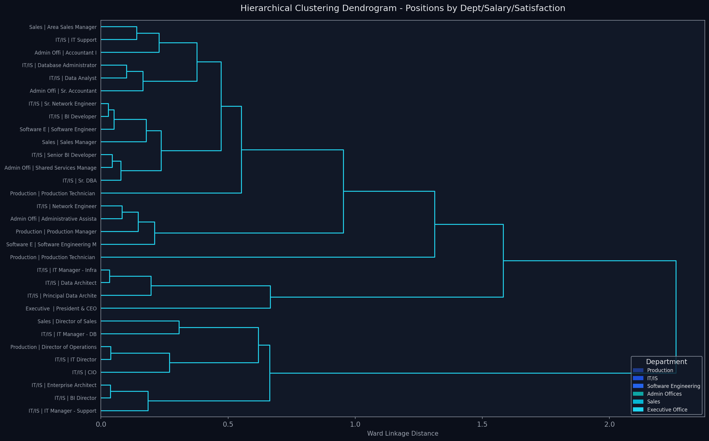
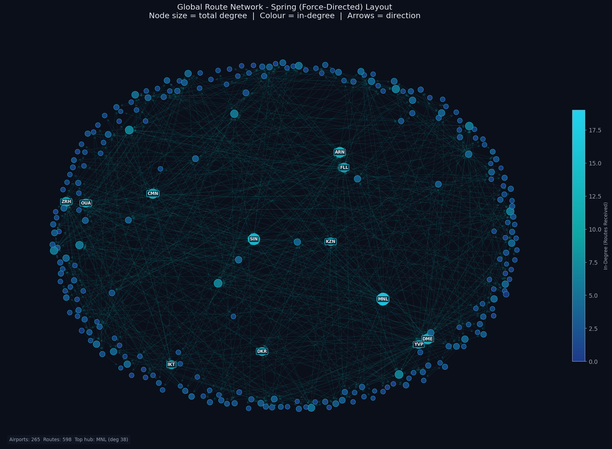
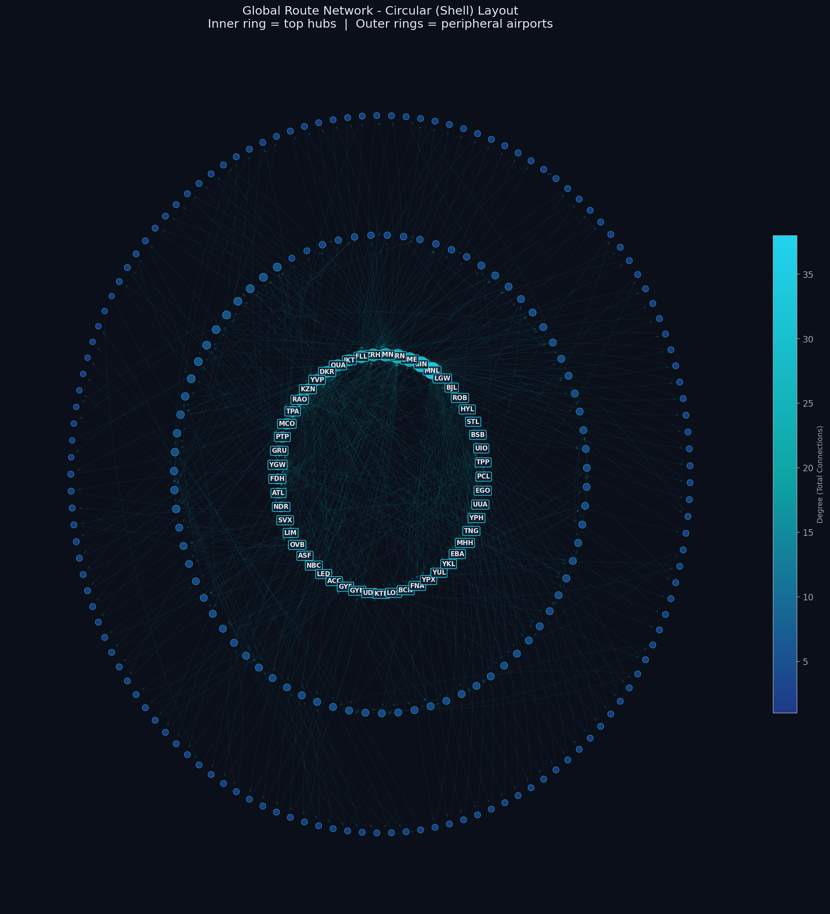

A dual-lens exploration — the internal hierarchy of a company through HR data, and the worldwide airline route network through graph analysis.
The HR dataset is structured as a four-level hierarchy: Company → Department → Position → Employee. Two complementary tree layouts reveal its structure from different angles.

A 600-row subset of the OpenFlights routes dataset forms a directed graph where airports are nodes and routes are edges. Two layout algorithms reveal different structural properties.


Contrasting the structural and visual properties of both visualization approaches.
| Dimension | Tree (HR) | Graph (Routes) |
|---|---|---|
| Type | Strict DAG | Directed cyclic |
| Depth | 4 levels | Flat peers |
| Root | Single (Company) | None |
| Edges | Parent → child only | Any pair, directed |
| Density | Low (tree property) | Moderate (hubs) |
| Technique | Strength | Weakness |
|---|---|---|
| Treemap | Size differences legible | Deep nesting loses context |
| Dendrogram | Reveals similarity clusters | Hard to read at scale |
| Spring Layout | Natural hub emergence | Non-deterministic |
| Circular Layout | Tier structure clear | Edge crossings clutter |
This assignment explored two datasets under the unifying theme of structure and connectivity — one internal (organizational), one global (geographic). The visualizations collectively reveal: